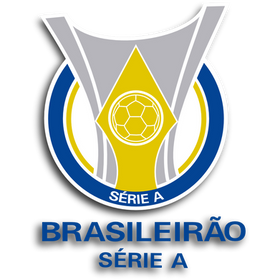

O Fluminense
Nossa História
Fundado em 21 de julho de 1902, por Oscar Cox, jovem filho de um cidadão inglês vice-cônsul da Inglaterra no Equador, o Fluminense Football Club levava, à época, as cores cinza e branco. Cox é um dos grandes responsáveis pela chegada do futebol ao Brasil. Em diversas idas à “Terra da Rainha”, sempre trazia novidades, bolas, materiais esportivos. Também jogou, foi campeão Carioca de 1906, quando o Flu já era verde, branco e grená. Com problemas para adquirir o tecido cinza para o uniforme original, em 1904 foi aprovada a alteração, nascendo o Tricolor. Pioneiro, o Fluminense construiu o primeiro estádio de cimento da América Latina, o Estádio de Laranjeiras, que foi sede do Campeonato Sul-Americano de Seleções, atual Copa América, e dos Jogos Olímpicos Latino-Americanos, atualmente Jogos Pan-Americanos, e foi palco do primeiro título relevante da Seleção Brasileira. Considerada o Prêmio Nobel do Esporte, o Fluminense é o único clube da América Latina que detém a Taça Olímpica, em 1949, além de ser o único clube de futebol do mundo ter seu nome inscrito na honraria concedida pelo Comitê Olímpico Internacional por serviços prestados ao esporte.Foi de Preguinho, um dos ídolos tricolores, o primeiro gol da Seleção Brasileira em Copas do Mundo. Desde Cox, muitos craques vestiram a camisa do Fluminense. Além de Preguinho, Pinheiro, Hércules, Escurinho, Waldo, Orlando Pingo de Ouro, Welfare, Ademir de Menezes, Rivellino, Altair, Jair Marinho, Gerson, Marcos Carneiro de Mendonça, Félix, Castilho, Carlos Alberto Torres, PC Caju, Pintinho, Branco, Didi, Ézio, Romerito, Assis, Washington, Renato Gaúcho, Tele Santana, Romário, Deco, Conca, entre outros, fizeram a alegria da torcida tricolor. Tetracampeão brasileiro, campeão da Copa do Brasil e da Copa da Primeira Liga, e 33 vezes campeão Estadual. Vice-Campeão das Copas Libertadores da América e Sul-americana. Além da sede de Laranjeiras e do Maracanã, onde manda seus jogos, o Fluminense possui dois Centros de Treinamentos. O de Xerém, em Duque de Caxias, é voltado para as divisões de base, e o da Barra da Tijuca, do Futebol Profissional.


- 